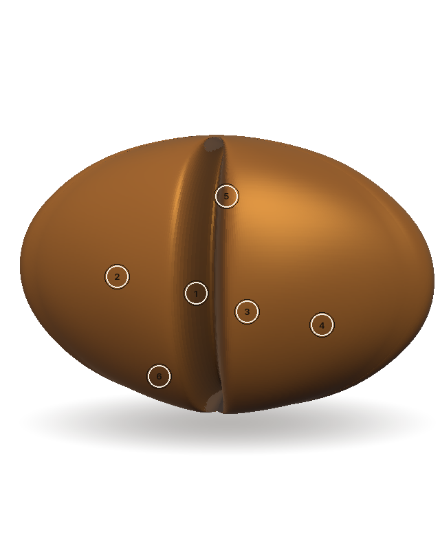

SINGLE ORIGIN · JAWA TIMUR
Terjaga untuk rasa yang sesungguhnya.
Kopi dari petani. Diseduh untukmu.
Setiap kemasan menyebut nama petani, desa, dan ketinggian kebunnya. Disangrai mingguan oleh Ais Coffee Roastery di Banyuwangi. Dikemas dan dikirim dari kota yang sama.
Putar bijinya, ketuk titiknya — setiap titik menyimpan senyawa yang berbeda.

Baca senyawa tanpa memutar biji
Rentang senyawa = literatur Arabika medium roast, bukan hasil lab biji Nocturne. Bentuk biji = model 3D, bukan hasil pindai.
01Cekungan tengah
Alur S tempat dua belahan biji bertemu. Di sini panas paling terkurung saat sangrai.
- Sukrosa sisa C12H22O116–9% (biji hijau) → sisa <4% pada mediumsumber karamelisasi; yang tersisa memberi rasa manis pendekliteratur terukur · S2
- 5-HMF C6H6O3terbentuk pada medium roast (terukur, bukan nol)penanda karamelisasi; berlebih terasa pahit-asamliteratur terukur · S2
02Kulit sangrai
Permukaan yang menyentuh drum. Warna cokelat medium berasal dari reaksi Maillard di lapisan ini.
- Melanoidin polimerterbentuk sejak ±150 °C, bertambah sampai akhir sangraibobot dan warna cangkir; menahan volatilrentang umum · S4
- Pirazin & furanon C4H4N2 · C4H6O2volatil, satuan ppb–ppmaroma kacang sangrai dan karamelrentang umum · S4
03Inti biji
Bagian dalam yang paling stabil terhadap panas. Dua alkaloid di sini hampir tidak berubah.
- Kafein C8H10N4O20,9–1,3% (Arabika, basis kering)pahit dasar; praktis tidak rusak saat sangrailiteratur terukur · S1
- Trigonelin C7H7NO20,87–0,90% hijau → turun ±50% pada mediumpahit dalam, sedikit earthy; sebagian berubah jadi niasinliteratur terukur · S1
04Bintik minyak
Pada medium roast minyak mulai naik ke permukaan. Ini yang membuat biji terlihat hidup, bukan kering.
- Lipid kopi trigliserida±15–16% massa biji Arabikamembawa aroma larut lemak; mouthfeelrentang umum · S4
- Diterpen (kafestol, kahweol) C20H28O3fraksi kecil dari lipidsebagian tertahan kertas filter, lolos di tubrukrentang umum · S4
05Ujung biji
Titik tempat embrio. Panas paling cepat masuk lewat sini, jadi perubahan trigonelin paling jauh.
- Asam nikotinat (niasin) C6H5NO2naik seiring trigonelin teruraihasil samping sangrai; menandai tingkat kegelapanliteratur terukur · S1
- Trigonelin sisa C7H7NO27,2–12,95 mg/g basis kering pada mediumpenyeimbang pahitliteratur terukur · S3
06Daging & serat
Struktur selulosa yang menyimpan asam. Di sini keasaman cangkir ditentukan.
- Klorogenat (5-CQA) C16H18O94,38–4,66% hijau → turun ±65% pada mediumkeasaman & body; sisa berlebih terasa sepatliteratur terukur · S1
- Asam kuiniat & asetat C7H12O6 · C2H4O2terbentuk saat sangrai mediumasam terasa di ujung lidah; penanda sangrailiteratur terukur · S2
Ketuk satu nama untuk melihat detail & harga.
Sembilan kopi · uji coba
Our Collection
Semua detail terbuka: nama petani, daerah tanam, ketinggian, varietas, proses, dan harga per ukuran. Tingkat sangrai kami tentukan per biji — titik di mana rasanya paling utuh.
Stok diperbarui — · diperbarui manual, bukan hitung mundur.
Tidak ada kopi yang cocok dengan saringan itu.
01 Single Origin
Tujuh kebun, tujuh cerita
02 Blends
Robusta Raung bertemu arabika Ijen
03 Paket & Lot Terbatas
Pintu masuk pembeli pertama
Belum tahu mau mulai dari mana? Paket Peta Rasa berisi tiga keluarga kopi — arabika, robusta, excelsa.
Lihat Peta RasaLangganan
Kopimu habis,
kami ingat.
Pilih paket, sisanya kami urus. Setiap siklus dikirim tepat setelah sangrai mingguan, dan kamu boleh ganti kopi kapan saja.
Siklus bulanan atau dua mingguan · bisa jeda kapan saja.
Manifesto
Kami tidak memutar drumnya.
Kami memutuskan apakah layak dikirim.
“Biji kami pilih sendiri dari petani. Sangrainya dikerjakan Ais Coffee Roastery di Banyuwangi — dan kami sebut namanya.”
Nocturne adalah brand kopi, bukan roastery.
-
01
Biji dipilih dari petani
Nama petani, desa, dan ketinggian kebun tercantum di kemasan — dengan izin mereka. Tanpa foto dan tanpa titik lokasi: privasi petani lebih dulu.
-
02
Disangrai mingguan oleh mitra
Profil sangrai kami susun, eksekusinya oleh Ais Coffee Roastery di kota yang sama. Kami tidak mengklaim menyangrai sendiri.
-
03
Diperiksa batch per batch
Kalau sebuah batch tidak memenuhi standar, batch itu tidak dikirim. Tanggung jawab mutu sepenuhnya di Nocturne.
-
04
Dikemas & dikirim dari Banyuwangi
Kemasan hitam matte dengan one-way valve. Tanggal sangrai dicantumkan, karena itu bukti kesegaran yang paling jujur.
Member
Nocturne Circle
Harga lebih baik untuk yang kembali lagi. Daftar sekali, dapat kode membermu.
Tingkat dan besaran diskon menunggu keputusan pemilik.
Daftar lewat WhatsApp dulu — formulir mandiri menyusul.
Mau kopi yang
bisa kamu lacak?
Sebutkan cara seduhmu, kami bantu pilihkan biji, ukuran, dan gilingannya. Dibalas manusia, bukan bot.
Pesan via WhatsAppSenin–Sabtu · 09.00–21.00 WIB — biasanya dibalas di bawah 2 jam.